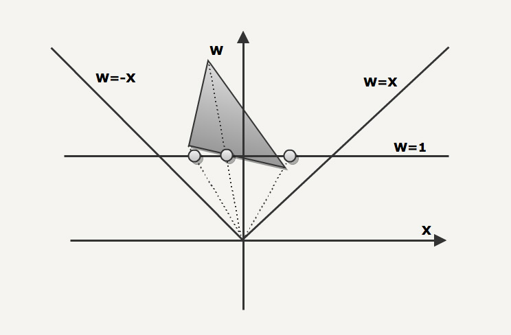

Polygon Codec/Homogeneous clipping
Back in the summer of 2009 I was working on a 3D engine that would power my next game: SHMUP a 3D shoot'em up "à la" Ikaruga. The target was the very first iPhone (now called iPhone 2G). Despite being impressive on paper (600Mhz with dedicated GPU), the hardware had several issues and the lack of dedicated VRAM was a huge bottleneck.
Unwilling to settle for anything less than 60 frames per second I became obsessed with saving bandwidth and I tried different approach until an idea proved to be not so bad...but I had to dive in the four dimensionnal world of homogeneous coordinates to make it work.
60 frames per seconds
Shmups are a great type of game: They provide instant fun, are usually packed with eye candies...and challenging to program because anything less than 60 frames per second ruins the magic. In this regard "Ikaruga" is often regarded as the best shmup ever created. If you don't know this legendary game, check out these videos:
It looks easy as the beginning but things gets nasty after the first Act:
Shortly after the released of the iPhone, Sega stated that the iPhone was as powerful as a Dreamcast (In reality it was not even close). I was hoping for a port from Treasure but it never came so I decided to roll up my sleeves, write my own game and craft my own 3D engine to run it.
Crafting the 3D engine
Pretty early in the development I found out that the CPU and GPU were far outperforming the data bus capabilities. In a nutshell the more data exchanged between the CPU and the GPU = the slower the engine.
I started to become obsessed with saving bandwidth, the list of optimizations can be found on the dEngine page. From mipmapping to normal/tangent compression, VBO storage and even changing the framebuffer color space (R8G8B8 to R5G6B5 = yummy): A lot was investigated. But something more could be achieved to squize the machine a bit further and it had to do with visible surface determination.
Visibile surface determination
This is what Michael Abrash has to say about Visibile surface determination:
I want to talk about what is, in my book, the toughest 3-D problem of all, visible surface determination (drawing the proper surface at each pixel), and its close relative, culling (discarding non-visible polygons as quickly as possible, a way of accelerating visible surface determination). In the interests of brevity, I’ll use the abbreviation VSD to mean both visible surface determination and culling from now on.
Why do I think VSD is the toughest 3-D challenge? Although rasterization issues such as texture mapping are fascinating and important, they are tasks of relatively finite scope, and are being moved into hardware as 3-D accelerators appear; also, they only scale with increases in screen resolution, which are relatively modest.
In contrast, VSD is an open-ended problem, and there are dozens of approaches currently in use. Even more significantly, the performance of VSD, done in an unsophisticated fashion, scales directly with scene complexity, which tends to increase as a square or cube function, so this very rapidly becomes the limiting factor in doing realistic worlds. I expect VSD increasingly to be the dominant issue in realtime PC 3-D over the next few years, as 3-D worlds become increasingly detailed.
I agree a lot with this: VSD is the toughest 3-D challenge of all.
Before even sending anything to render to the GPU a 3D engine must perform a key step: Determine what is visible on the screen. If you don't do this you have to send the entire world to the GPU: It would take too much time and the game would run at 0.5 frames per second.
As an example every engine from id software used Binary Space Partition with PVS (at least until Doom3 when they switched to portals). But most of the time the world is preprocessed by slicing it up via an Octree. Once the world is segmented, at runtime it can be recursively tested against the view frustrum and hence most of what is sent to the GPU ends up contributing to a pixel.
But there are several issues with an octree:
- Slicing the world create a lot of additional polygons (each time a splitting plan cut a polygon, it results in three sub-polygons). This result in more polygons to render when a block is fully visible.
- All the polygons returned are not necessarily renderered. A block of the octree can intersect with the view frustrum but contribute nothing to the screen.
- It is not the best structure when the camera path is predetermined. Freedom of movement is mandatory in a First Person Shooter: Wherever the player is, its view frustrum can be tested against the Octree and the right polygons can be sent to the GPU for rendition. But in the case of a shmup we can clearly use a structure or design that takes advantage of the determinism of the camera path.
Polygon Codec
"Polygon codec" is a simple idea: Since the camera path is predetermined the set of visible polygons is precalculated for each frame and stored compressed (it is an extension of the PVS (Probably Visible Set) from the Quake engines). At runtime the CPU decompress the visible set as a stream of updates to the indice list of each object.
Preprocessing :
For each frame in the camera path of the level:
- Generate the Visible Surface Set for the current frame.
- Based on the signed area keep only the 2500 biggest polygons in the set and discard the rest. This set is called SVS (Significant Visible Set)
For each blocks of 60 frames:
- Keep the first frame SVS as a full update, this is similar as the keyframe in a video codec.
- Delta encode the next frame based on the previous, recording only the updates (objectId + polygonId to remove and objectID + polygonId to add).
Runtime :
At runtime, the engine upload the object vertices to a VBO and just maintain an indice list for each object thanks to what was precalculated.
For each object:
-
If the frame is a keyframe just copy the indices set provided and send it to the GPU. A simple
memcpy: it doesn't get simpler than that !.
- If the frame is a deltaframe, just apply the deletion and addition the the indices and send to the GPU. Very quick too !
As a result, the runtime process time is greatly reduced to virtually 0 operations and provides only polygons that will contribute to the scene.
The Vertex Pipeline
An idea if you cannot implement is worthless. Poylgon Codec is a simple idea but we need to fully understand the GPU pipeline to make it happen. You probably already know about this but here is a reminder just so we are on the same page:
- The vertices database resides either on the CPU RAM or in the GPU VRAM in a VBO.
- Usually vertices have a X,Y and a Z component. The driver adds a fourth one : Called W it is later used for perspective and initialized with value 1. A point is now four dimensional and expressed in homogeneous coordinate
- The vertex in Model space is first transformed to Eye Space via the GL_MODEL_VIEW matrix, this is the Model view Transform
- Next is the Perpsective Transform that takes points in Eye Space and transform them in Clipping space. At this point W is not 1 anymore and we are truly dealing with a four dimensionnal coordinate.
- The Perspective Divide bring things back to three dimensions and actually fake perspective: Things far away shrink and things closer get bigger.
- Finally the Viewport Transform takes the coordinates from a [-1,1] value set to pixel coordinate (X,Y) and Zbuffer values.
All thoses steps are extensively covered in any good 3D book (check out Real-Time Rendering as an example).
One aspect that is rarely covered is how to perform clipping in homogeneuous coordinate. Because Polygon Codec requires the area of a polygon on the screen (when it selects only the biggest ones): we cannot ignore with step.
There are a few gems that will help you to understand homogeneous coordinates:
- The original "CLIPPING USING HOMOGENEOUS COORDINATES" by James F. Blinn and Martin E. Newell
- A Trip Down the Graphics Pipeline by Jim Blinn (yes the same Blinn that co-authored the paper above).
- "CLIPPING"by Kenneth I. Joy
- A set of links to PDF treating of homogeneuous clipping: Here (mirror).
Most of the drawing and code found on this webpage were derivated from the material previously listed.
Homogeneous coordinate clipping: Theory
Homogeneous coordinate clipping is the art of clipping in four dimensions avoiding in the process to output a W=0 (division by zero in the next stage of the pipeline).
Since the W divide is essentially a projection on the W=1 line, it can be visualized as follow for the [X,W] couple (the same would go for [Y,W] and [Z,W]):
In the next drawing, we can see that thanks to the W divide (projection on W=1 line), objects far away from the point of view will appear smaller than objects located closer.

The next drawing illustrate the left and right clipping planes (W=-X and W=X). The three vertices of the polygons are projected on W=1 during the perspective divide.

The next polygon has to be clipped against the right clipping plan. In this case the 3 vertices polygon becomes a 4 vertices polygons.
Since the two new vertices are now sitting on the edge, they are projected to the same [X,W=1] coordinates.
The following case illustrate two special cases:
- One of the vertices has a negative W, this would cause a "polygon inversion" if projected as is on W=1.
- The clipping actually produce vertices with a W=0 component. That would cause a divide by zero. A way to solve this is to clip against W=0.00001 plan.
Homogeneous coordinate clipping code sample
With all this knowledge we can now write a preprocessor that will take as input the camera path, the level description and will output an SVS (Significant Visible Set of polygons) that will be played at runtime.
From a high level:
- We clip the polygon against the LEFT,RIGHT,TOP,BOTTOM,NEAR,FAR planes plus an other one.
- The output polygon of a plan clipping feed the next plan clipping.
- During a plan clipping each edge is tested in sequence via a simplified dot product.
- If an intersection is detected, the exact location is determined using parametric equations.
First we declare our data structure and a few helpers macros.
enum { X, Y, Z, W };
typedef float vec4_t[4];
typedef float vec2_t[2];
#define MAX_VERTICES_PRE_POLYGON 10
typedef struct polygon_t
{
//Homogenous space vertices
unsigned char hs_numVertices;
vec4_t hs_vertices[MAX_VERTICES_PRE_POLYGON];
} polygon_t;
#define vector4Subtract( a, b, c ) ((c)[ 0 ] = (a)[ 0 ] - (b)[ 0 ], \
(c)[ 1 ] = (a)[ 1 ] - (b)[ 1 ], \
(c)[ 2 ] = (a)[ 2 ] - (b)[ 2 ], \
(c)[ 3 ] = (a)[ 3 ] - (b)[ 3 ] )
#define vector4Add( a, b, c ) ((c)[ 0 ] = (a)[ 0 ] + (b)[ 0 ],\
(c)[ 1 ] = (a)[ 1 ] + (b)[ 1 ],\
(c)[ 2 ] = (a)[ 2 ] + (b)[ 2 ],\
(c)[ 3 ] = (a)[ 3 ] + (b)[ 3 ] )
#define vector4Copy( a, b ) ((b)[ 0 ] = (a)[ 0 ],\
(b)[ 1 ] = (a)[ 1 ],\
(b)[ 2 ] = (a)[ 2 ],\
(b)[ 3 ] = (a)[ 3 ] )
#define vector4Scale( v, s, o ) ((o)[ 0 ] = (v)[ 0 ] * (s),\
(o)[ 1 ] = (v)[ 1 ] * (s),\
(o)[ 2 ] = (v)[ 2 ] * (s),\
(o)[ 3 ] = (v)[ 3 ] * (s) )
void copyVertices(vec4_t* from, polygon_t* to, int numVertices)
{
int i;
to->hs_numVertices = numVertices;
for(i=0 ; i < numVertices ; i++)
{
vector4Copy(from[i],to->hs_vertices[i]);
}
}
We can then write the first method that will remove any point with W negative and bring them just above zero to avoid a divive by zero during the perspective divide phase. This will avoid the special case mentionned previously.
#define W_CLIPPING_PLANE 0.00001
//Clip against plane w=W_CLIPPING_PLANE
void ClipPolygonOnWAxis(polygon_t* face)
{
int i;
vec4_t* currentVertice;
vec4_t* previousVertice;
unsigned char in_numVertices=0;
vec4_t in_vertices[MAX_VERTICES_PRE_POLYGON];
char previousDot;
char currentDot;
float intersectionFactor;
vec4_t intersectionPoint;
previousVertice = &face->hs_vertices[face->hs_numVertices-1];
previousDot = ((*previousVertice)[W] < W_CLIPPING_PLANE) ? -1 : 1;
currentVertice = &face->hs_vertices[0];
while (currentVertice != &face->hs_vertices[face->hs_numVertices] )
{
currentDot = ((*currentVertice)[W] < W_CLIPPING_PLANE) ? -1 : 1;
if (previousDot * currentDot < 0)
{
//Need to clip against plan w=0
intersectionFactor = (W_CLIPPING_PLANE - (*previousVertice)[W] ) / ((*previousVertice)[W]- (*currentVertice)[W]);
// I = Qp + f(Qc-Qp))
vector4Copy(*currentVertice,intersectionPoint); // Qc
vector4Subtract(intersectionPoint, *previousVertice ,intersectionPoint); // (Qc-Qp)
vector4Scale(intersectionPoint,intersectionFactor,intersectionPoint); // f(Qc-Qp))
vector4Add(intersectionPoint,*previousVertice,intersectionPoint); //Qp + f(Qc-Qp))
// Insert
vector4Copy(intersectionPoint,in_vertices[in_numVertices]);
in_numVertices++;
}
if (currentDot > 0)
{
//Insert
vector4Copy(*currentVertice,in_vertices[in_numVertices]);
in_numVertices++;
}
previousDot = currentDot;
//Move forward
previousVertice = currentVertice;
currentVertice++;
}
//Copy the output(in_vertices) into the source (face)
copyVertices(in_vertices,face,in_numVertices);
in_numVertices = 0;
}
Then we have a generic method that can be used for any of the axis:
Xwill clip against w=x and w=-x, respectively RIGHT and LEFTYwill clip against w=y and w=-y, respectively TOP and BOTTOMZwill clip against w=z and w=-z, respectively FAR and NEAR
void ClipPolygonForAxis(polygon_t* face, int AXIS)
{
int i;
vec4_t* currentVertice;
vec4_t* previousVertice;
unsigned char in_numVertices=0;
vec4_t in_vertices[MAX_VERTICES_PRE_POLYGON];
char previousDot;
char currentDot;
float intersectionFactor;
vec4_t intersectionPoint;
//Clip against first plane
previousVertice = &face->hs_vertices[face->hs_numVertices-1];
previousDot = ((*previousVertice)[AXIS] <= (*previousVertice)[W]) ? 1 : -1;
currentVertice = &face->hs_vertices[0];
while (currentVertice != &face->hs_vertices[face->hs_numVertices] )
{
currentDot = ((*currentVertice)[AXIS] <= (*currentVertice)[W]) ? 1 : -1;
if (previousDot * currentDot < 0)
{
//Need to clip against plan w=0
intersectionFactor =
((*previousVertice)[W] - (*previousVertice)[AXIS]) /
(((*previousVertice)[W] - (*previousVertice)[AXIS]) - ((*currentVertice)[W] - (*currentVertice)[AXIS]) );
vector4Copy(*currentVertice,intersectionPoint);
vector4Subtract(intersectionPoint, *previousVertice ,intersectionPoint);
vector4Scale(intersectionPoint,intersectionFactor,intersectionPoint);
vector4Add(intersectionPoint,*previousVertice,intersectionPoint);
// Insert
vector4Copy(intersectionPoint,in_vertices[in_numVertices]);
in_numVertices++;
}
if (currentDot > 0)
{
//Insert
vector4Copy(*currentVertice,in_vertices[in_numVertices]);
in_numVertices++;
}
previousDot = currentDot;
//Move forward
previousVertice = currentVertice;
currentVertice++;
}
//Copy the output(in_vertices) into the source (face)
copyVertices(in_vertices,face,in_numVertices);
in_numVertices = 0;
//Clip against opposite plane
previousVertice = &face->hs_vertices[face->hs_numVertices-1];
previousDot = (-(*previousVertice)[AXIS] <= (*previousVertice)[W]) ? 1 : -1;
currentVertice = &face->hs_vertices[0];
while (currentVertice != &face->hs_vertices[face->hs_numVertices] )
{
currentDot = (-(*currentVertice)[AXIS] <= (*currentVertice)[W]) ? 1 : -1;
if (previousDot * currentDot < 0)
{
//Need to clip against plan w=0
intersectionFactor =
( (*previousVertice)[W] + (*previousVertice)[AXIS]) /
( ( (*previousVertice)[W] + (*previousVertice)[AXIS]) - ((*currentVertice)[W] + (*currentVertice)[AXIS]) );
vector4Copy(*currentVertice,intersectionPoint);
vector4Subtract(intersectionPoint, *previousVertice ,intersectionPoint);
vector4Scale(intersectionPoint,intersectionFactor,intersectionPoint);
vector4Add(intersectionPoint,*previousVertice,intersectionPoint);
// Insert
vector4Copy(intersectionPoint,in_vertices[in_numVertices]);
in_numVertices++;
}
if (currentDot > 0)
{
//Insert
vector4Copy(*currentVertice,in_vertices[in_numVertices]);
in_numVertices++;
}
previousDot = currentDot;
//Move forward
previousVertice = currentVertice;
currentVertice++;
}
//Copy the output(in_vertices) into the source (face)
copyVertices(in_vertices,face,in_numVertices);
in_numVertices = 0;
}
Finally we can write the ClipPolygon method:
void ClipPolygon(polygon_t* face)
{
ClipPolygonOnWAxis(face); // w=W_CLIPPING_PLANE
ClipPolygonForAxis(face,X); // w=x , w=-x
ClipPolygonForAxis(face,Y); // w=y , w=-y
ClipPolygonForAxis(face,Z); // w=z , w=-z
}
Full code source here. Note that this code is not optimized for a realtime processing apart for the simplified dot products. If anyone from Nvidia or ATI read this, feel free to let me know what could be improved ;) !
Delta encoding
The first level of shmup is three minutes long. The precalculated SVS was 2MB before delta compression but only 800KB after. Of course the compression gain depends on the
amount of delta between frames: The intro is 1200Kb for two minutes.
Results
Precalculate the Visible Set of polygon in a 3D engine may sound like a stupid idea but in this case it allowed to squize an additional 15% in terms of framerate.
It also provided a constant framerate and made the level designer's life easy because he never had to worry about showing too many polygon with the camera.
A few videos so you can see by yourself:
Following: A test using Ikaruga models. The "TENSO" level is 10k polygons but the 2500 limitation doesn't show. Note that some of the polygons are flashing because I didn't master the negative W issues yet.
Additional readings
| Clipping using homegeneous coordinates by James F. Blinn and Martin E. Newell | |
| CLIPPING by Kenneth I. Joy | |
| A Trip Down the Graphics Pipeline by Jim Blinn | |
| Backroom Boys great read about the genese of Elite game (in the style of "Masters of Doom"). |